🎓 How to Set Up for Online Training with OBS, Canva, and Kubernetes! 🚀
Whether you're training on Rancher with Kubernetes or any other tech topic, setting up a professional online training environment can make a huge difference in how you engage with your audience. Here's a step-by-step guide on how I set up my scenes using OBS, Canva, and more for a seamless training experience!
🎬 Step 1: Setting Up OBS Scenes
First things first: OBS is your best friend for professional live streaming. Here's how I create and manage my scenes:
mono!
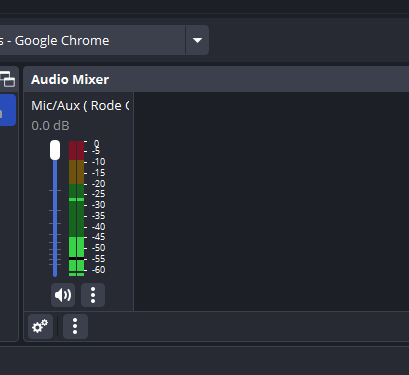
-
Add Canva Presentation: Design your slides in Canva. Canva is fantastic for creating clean, visually appealing slides. Export them as images or PDFs and load them into OBS as a source. You can create multiple sources in OBS for different sections of your presentation.
-
Camera Placement: Use your main camera as another source. This will be the key to switching between your face and your content seamlessly. I usually place this in the corner, overlaying the slides.
-
Audio Setup: Don't forget to set your microphone as an audio input source. Pro tip: Use a noise gate filter in OBS to eliminate background noise.
💡 Pro Tip: Set up keyboard shortcuts to switch between scenes quickly while presenting.
🖥️ Step 2: Setting Up a Dual Monitor Display
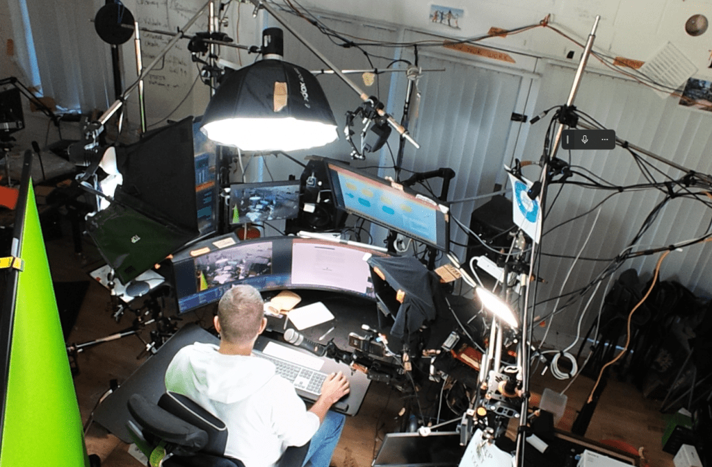
I like to project my main camera view onto a second monitor. This setup allows me to keep an eye on what the audience sees while focusing on my main screen. That way, I don’t have to switch back and forth between views while training.
- Projected Screen: On one screen, show the OBS preview, and on the other, have your training material ready, such as Kubernetes or Rancher commands. This keeps everything at your fingertips!
🔗 Step 3: Using Video.Ninja for Live Camera Feeds
I use Video.Ninja to connect and manage multiple camera feeds during live training. You can add your camera into OBS using Video.Ninja's integration for crystal-clear video.
-
Link the Camera: Simply use Video.Ninja to add your camera feed into OBS.
-
Monitor Feeds: Keep your camera feeds visible without switching tabs during the live training.
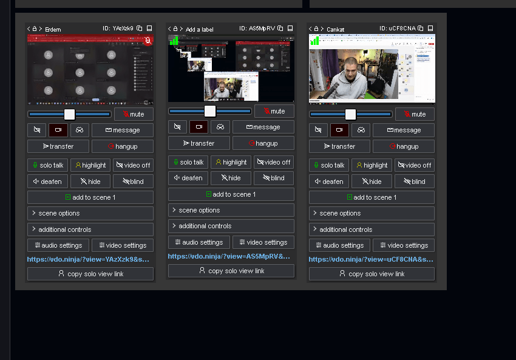
💡 Step 4: Lighting & Audio
Don't forget the basics! Always make sure:
-
Lighting: Good lighting makes a world of difference. Turn on your lights to ensure you're clearly visible. Natural light works well, but if that’s not available, ring lights are a great alternative.
-
Sound: Use a good quality mic and check audio levels in OBS before going live.
📼 Step 5: Record Your Training to Loom
At the end of the training, I use Loom to record the session and automatically save it in the designated folder. Loom is great for sharing recorded sessions and reviewing them later.
Step 6 : Install Teams
-
Update Choco
-
Restart if needed
-
Decide on the login
-
Use the browser login
-
Set up the updated gear
-
Settings on teams
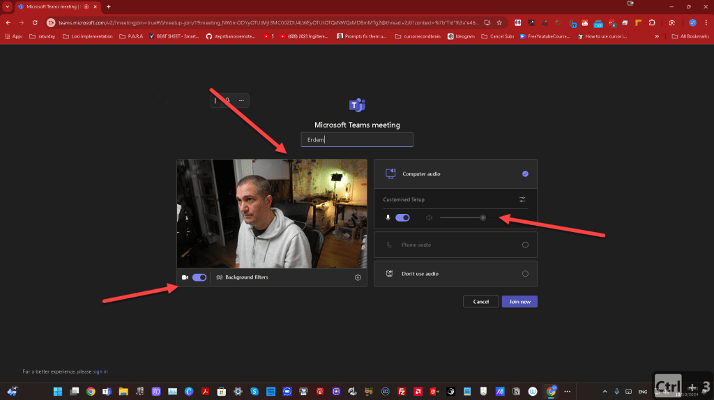
Camera off Projected screen
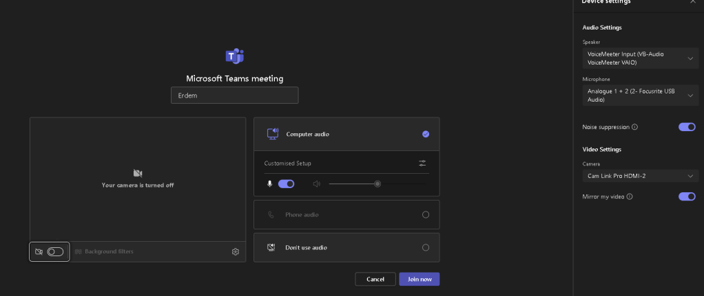
Login test
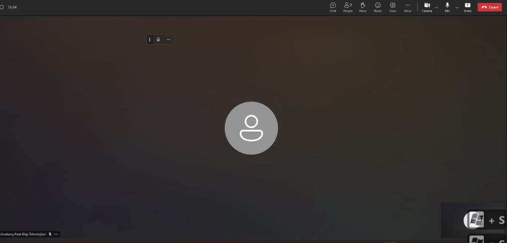
Project
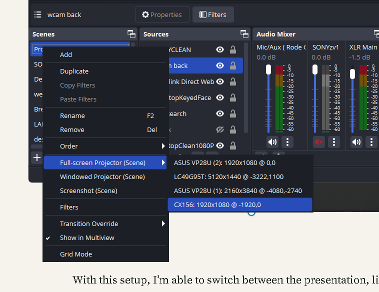
From A7s3 to sony zv1
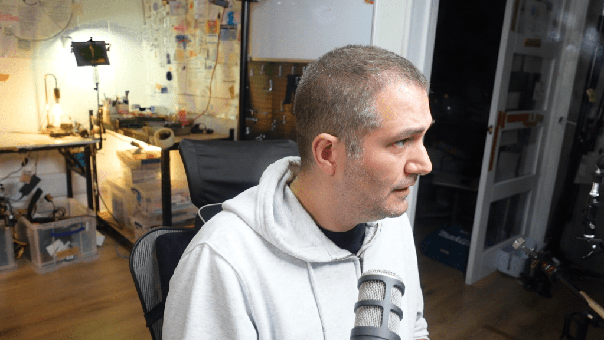
Scene
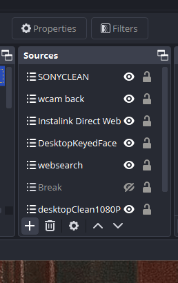
back cam
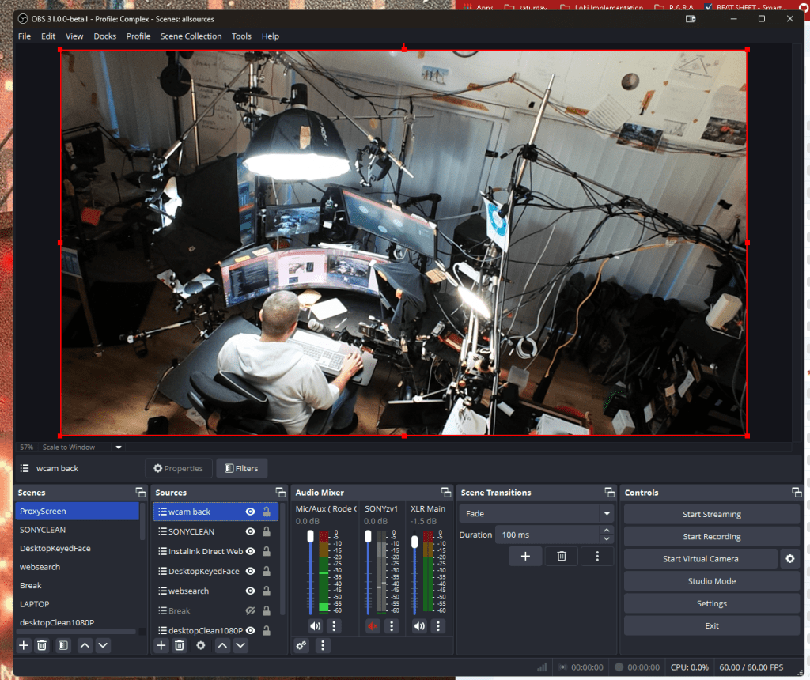
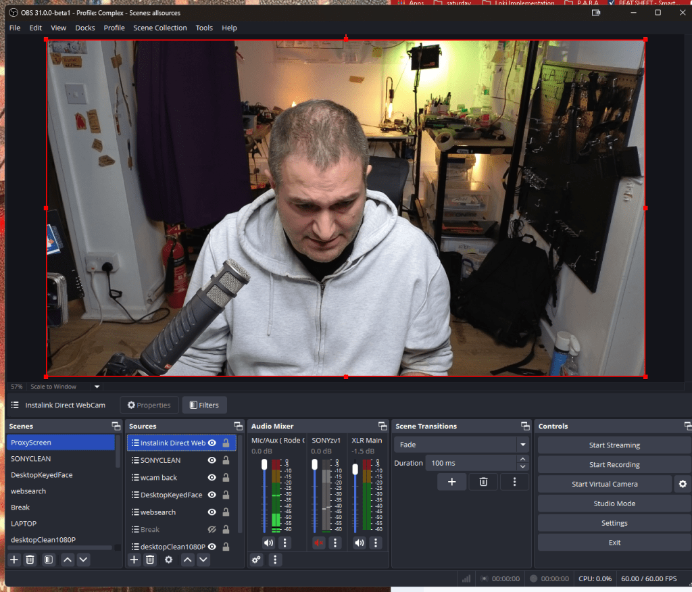
WebCapture
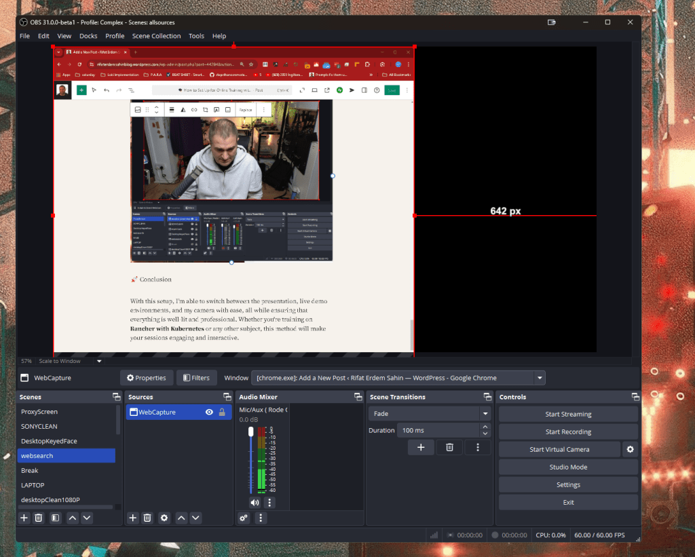
Green Screen and Lights
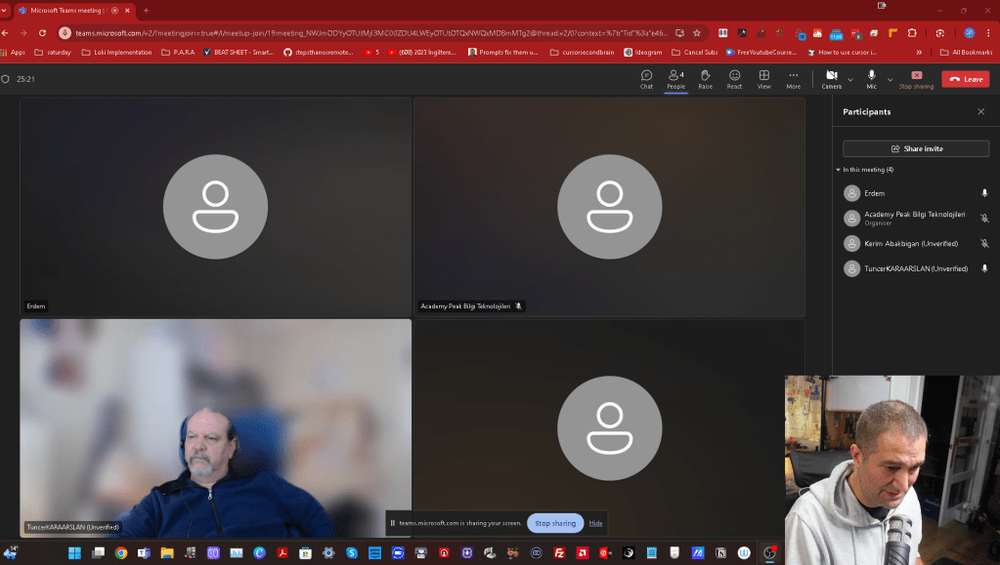
Test Presentation
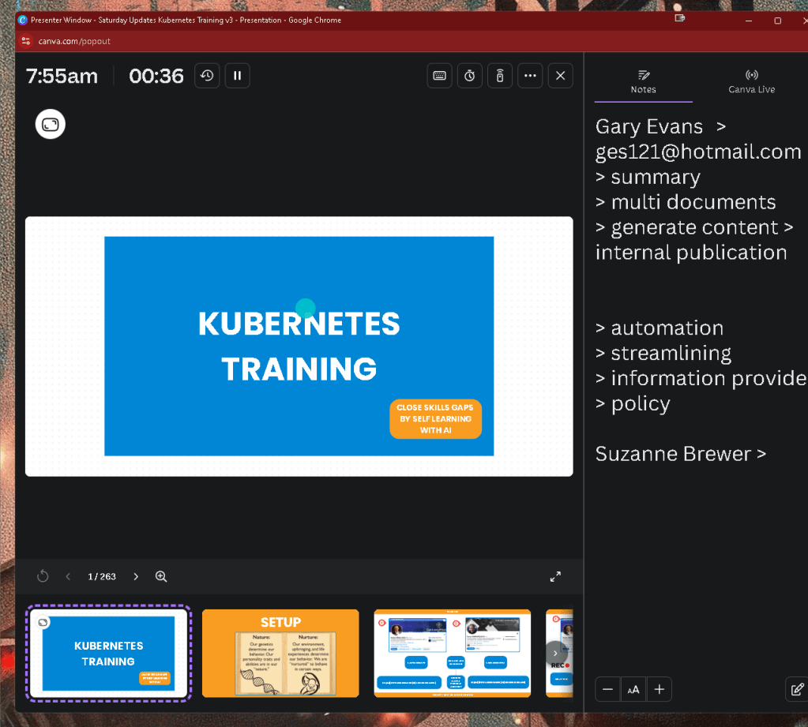
Presentation checked
🚀 Conclusion
With this setup, I’m able to switch between the presentation, live demo environments, and my camera with ease, all while ensuring that everything is well-lit and professional. Whether you're training on Rancher with Kubernetes or any other subject, this method will make your sessions engaging and interactive.
🔗 Connect with Me:
⚡ Ready to boost your online training game? Let’s go!
**What i learned **
-
timers with canva
-
decicaded share screens needed
-
3 minute delivery is great > at the end ask questions
Imported from rifaterdemsahin.com · 2024